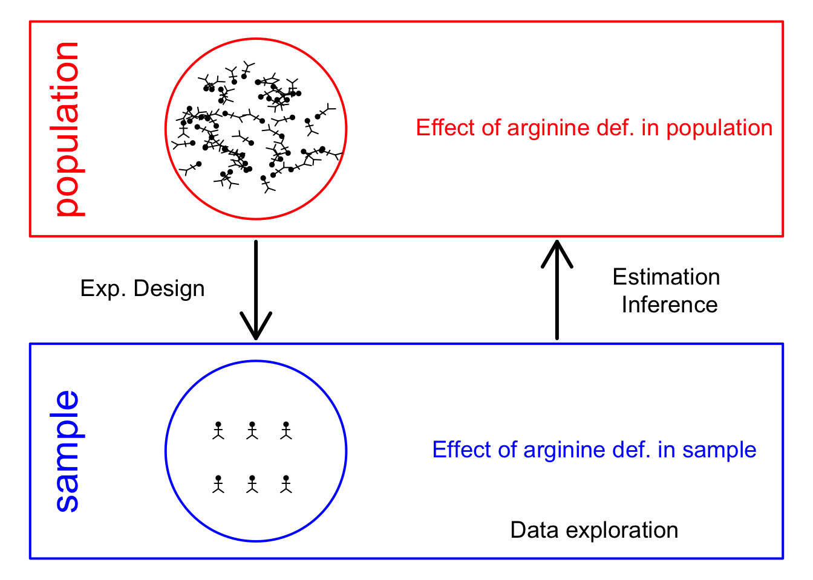

Statistical Methods for Quantitative MS-based Proteomics: Part II. Differential Abundance Analysis
Lieven Clement
June 19, 2021
Outline
- Francisella tularensis Example
- Hypothesis testing
- Multiple testing
- Moderated statistics
- Experimental design
1 Francisella tularensis experiment


- Pathogen: causes tularemia
- Metabolic adaptation key for intracellular life cycle of pathogenic microorganisms.
- Upon entry into host cells quick phasomal escape and active multiplication in cytosolic compartment.
- Franciscella is auxotroph for several amino acids, including arginine.
- Inactivation of arginine transporter delayed bacterial phagosomal escape and intracellular multiplication.
- Experiment to assess difference in proteome using 3 WT vs 3 ArgP KO mutants
1.1 Import the data in R
Click to see code
- Load libraries
library(tidyverse)
library(limma)
library(QFeatures)
library(msqrob2)
library(plotly)
library(ggplot2)- We use a peptides.txt file from MS-data quantified with maxquant that contains MS1 intensities summarized at the peptide level.
peptidesFile <- "https://raw.githubusercontent.com/statOmics/PDA20/data/quantification/francisella/peptides.txt"- Maxquant stores the intensity data for the different samples in columnns that start with Intensity. We can retreive the column names with the intensity data with the code below:
- Read the data and store it in QFeatures object
- Update data with information on design
colData(pe)$genotype <- pe[[1]] %>%
colnames %>%
substr(12,13) %>%
as.factor %>%
relevel("WT")
pe %>% colData## DataFrame with 6 rows and 1 column
## genotype
## <factor>
## Intensity.1WT_20_2h_n3_3 WT
## Intensity.1WT_20_2h_n4_3 WT
## Intensity.1WT_20_2h_n5_3 WT
## Intensity.3D8_20_2h_n3_3 D8
## Intensity.3D8_20_2h_n4_3 D8
## Intensity.3D8_20_2h_n5_3 D81.2 Preprocessing
Click to see code to log-transfrom the data
- Log transform
- Calculate number of non zero intensities for each peptide
- Peptides with zero intensities are missing peptides and should be represent with a
NAvalue rather than0.
- Logtransform data with base 2
- Filtering
- Handling overlapping protein groups
pe[["peptideLog"]] <-
pe[["peptideLog"]][rowData(pe[["peptideLog"]])$Proteins
%in% smallestUniqueGroups(rowData(pe[["peptideLog"]])$Proteins),]- Remove reverse sequences (decoys) and contaminants. Note that this is indicated by the column names Reverse and depending on the version of maxQuant with Potential.contaminants or Contaminants.
pe[["peptideLog"]] <- pe[["peptideLog"]][rowData(pe[["peptideLog"]])$Reverse != "+", ]
pe[["peptideLog"]] <- pe[["peptideLog"]][rowData(pe[["peptideLog"]])$
Contaminant != "+", ]- Drop peptides that were only identified in one sample
pe[["peptideLog"]] <- pe[["peptideLog"]][rowData(pe[["peptideLog"]])$nNonZero >= 2, ]
nrow(pe[["peptideLog"]])## [1] 6525We keep 6525 peptides upon filtering.
- Normalization by median centering
- Summarization. We use the standard sumarisation in aggregateFeatures, which is a robust summarisation method.
## Your quantitative and row data contain missing values. Please read the
## relevant section(s) in the aggregateFeatures manual page regarding the
## effects of missing values on data aggregation.Plot of preprocessed data
pe[["peptideNorm"]] %>%
assay %>%
as.data.frame() %>%
gather(sample, intensity) %>%
mutate(genotype = colData(pe)[sample,"genotype"]) %>%
ggplot(aes(x = intensity,group = sample,color = genotype)) +
geom_density() +
ggtitle("Peptide-level")## Warning: Removed 7561 rows containing non-finite values (stat_density).
pe[["protein"]] %>%
assay %>%
as.data.frame() %>%
gather(sample, intensity) %>%
mutate(genotype = colData(pe)[sample,"genotype"]) %>%
ggplot(aes(x = intensity,group = sample,color = genotype)) +
geom_density() +
ggtitle("Protein-level")## Warning: Removed 428 rows containing non-finite values (stat_density).
1.3 Summarized data structure
1.3.1 Design
| genotype | |
|---|---|
| Intensity.1WT_20_2h_n3_3 | WT |
| Intensity.1WT_20_2h_n4_3 | WT |
| Intensity.1WT_20_2h_n5_3 | WT |
| Intensity.3D8_20_2h_n3_3 | D8 |
| Intensity.3D8_20_2h_n4_3 | D8 |
| Intensity.3D8_20_2h_n5_3 | D8 |
- WT vs KO
- 3 vs 3 repeats
1.3.2 Summarized intensity matrix
| Intensity.1WT_20_2h_n3_3 | Intensity.1WT_20_2h_n4_3 | Intensity.1WT_20_2h_n5_3 | Intensity.3D8_20_2h_n3_3 | Intensity.3D8_20_2h_n4_3 | Intensity.3D8_20_2h_n5_3 | |
|---|---|---|---|---|---|---|
| WP_003013731 | -0.2748775 | -0.0856247 | 0.1595370 | -0.2809009 | 0.0035526 | 0.0567110 |
| WP_003013860 | NA | NA | -0.2512039 | NA | NA | -0.4865646 |
| WP_003013909 | -0.6851118 | -0.8161658 | -0.7557906 | -0.4591476 | -0.5449424 | -0.4962482 |
| WP_003014068 | 0.6495386 | 0.8522239 | 1.1344852 | 0.5459176 | 0.9187714 | 0.5974741 |
| WP_003014122 | -0.7630863 | -1.0430741 | -0.8091715 | -1.1743951 | -1.1924725 | -1.2565893 |
| WP_003014123 | -0.2051672 | -0.3361704 | -0.2151930 | -0.3855747 | -0.2802011 | -0.5801771 |
- 1115 proteins
1.3.3 Hypothesis testing: a single protein

1.3.3.1 T-test
\[ \log_2 \text{FC} = \bar{y}_{p1}-\bar{y}_{p2} \]
\[ T_g=\frac{\log_2 \text{FC}}{\text{se}_{\log_2 \text{FC}}} \]
\[ T_g=\frac{\widehat{\text{signal}}}{\widehat{\text{Noise}}} \]
If we can assume equal variance in both treatment groups:
\[ \text{se}_{\log_2 \text{FC}}=\text{SD}\sqrt{\frac{1}{n_1}+\frac{1}{n_2}} \]
WP_003023392 <- data.frame(
intensity = assay(pe[["protein"]]["WP_003023392",]) %>% c(),
genotype = colData(pe)[,1])
WP_003023392 %>%
ggplot(aes(x=genotype,y=intensity)) +
geom_point() +
ggtitle("Protein WP_003023392")
\[ t=\frac{\log_2\widehat{\text{FC}}}{\text{se}_{\log_2\widehat{\text{FC}}}}=\frac{-1.43}{0.0577}=-24.7 \]
Is t = -24.7 indicating that there is an effect?
How likely is it to observe t = -24.7 when there is no effect of the argP KO on the protein expression?
1.3.3.2 Null hypothesis (\(H_0\)) and alternative hypothesis (\(H_1\))
With data we can never prove a hypothesis (falsification principle of Popper)
With data we can only reject a hypothesis
In general we start from alternative hypothese \(H_1\): we want to show an effect of the KO on a protein
- But, we will assess this by falsifying the opposite:
\(H_0\): On average the protein abundance in WT is equal to that in KO<-
##
## Welch Two Sample t-test
##
## data: intensity by genotype
## t = 24.747, df = 3.1653, p-value = 9.911e-05
## alternative hypothesis: true difference in means between group WT and group D8 is not equal to 0
## 95 percent confidence interval:
## 1.249550 1.606175
## sample estimates:
## mean in group WT mean in group D8
## -0.1821147 -1.6099769How likely is it to observe an equal or more extreme effect than the one observed in the sample when the null hypothesis is true?
When we make assumptions about the distribution of our test statistic we can quantify this probability: p-value. The p-value will only be calculated correctly if the underlying assumptions hold!
When we repeat the experiment, the probability to observe a fold change more extreme than a 0.372 fold (\(\log_2 FC=-1.43\)) down or up regulation by random change (if \(H_0\) is true) is 3 out of 100.000.
If the p-value is below a significance threshold \(\alpha\) we reject the null hypothesis. We control the probability on a false positive result at the \(\alpha\)-level (type I error)
Note, that the p-values are uniform under the null hypothesis, i.e. when \(H_0\) is true all p-values are equally likely.
1.4 Multiple hypothesis testing
Consider testing DA for all \(m=1115\) proteins simultaneously
What if we assess each individual test at level \(\alpha\)? \(\rightarrow\) Probability to have a false positive among all m simultatenous test \(>>> \alpha= 0.05\)
Suppose that 800 proteins are non-DA, then we could expect to discover on average 800 × 0.05 = 40 false positive proteins. Hence, we are bound to call false positive proteins each time we run the experiment.
1.4.1 Multiple testing
When we want to infer on differential abundance of multiple proteins we have to address the multiple testing issue.
1.4.1.1 Family-wise error rate
The family-wise error rate (FWER) addresses the multiple testing issue by no longer controlling the individual type I error for each protein, instead it controls:
\[ \text{FWER}=\text{P}\left[\text{reject at least one }H_{0i} \mid H_0\text{ is true}\right]. \]
The Bonferroni method is widely used to control the type I error:
- assess each test at \[\alpha_\text{adj}=\frac{\alpha}{m}\]
- or use adjusted p-values and compare them to \(\alpha\): \[p_\text{adj}=\text{min}\left(p \times m,1\right)\]
Problem, the method is very conservative!
1.4.1.2 False discovery rate
- FDR: Expected proportion of false positives on the total number of positives you return.
- An FDR of 1% means that on average we expect 1% false positive proteins in the list of proteins that are called significant.
- Defined by Benjamini and Hochberg in their seminal paper Benjamini, Y. and Hochberg, Y. (1995). “Controlling the false discovery rate: a practical and powerful approach to multiple testing”. Journal of the Royal Statistical Society Series B, 57 (1): 289–300.
The table shows the results of \(m\) hypothesis tests in a single experiment.
| accept \(H_{0i}\) | reject \(H_{0i}\) | Total | |
|---|---|---|---|
| null | TN | FP | \(m_0\) |
| non-null | FN | TP | \(m_1\) |
| Total | NR | R | m |
- \(TN\): number of true negative: random and unobserved
- \(FP\): number of false positives: random and unobserved
- \(FN\): number of false negatives: random and unobserved
- \(TP\): number of true positives: random and unobserved
- \(NR\): number of acceptances (negative results): random and observed
- \(R\): number of rejections (positive results): random and observed
- \(m_0\) and \(m_1\): fixed and unobserved
- \(m\): fixed and observed
The False Discovery Proportion (FDP) is the fraction of false positives that are returned, i.e.
\[ FDP = \frac{FP}{R} \] However, this quantity cannot be observed because in practice we only know \(R\) but we do not know \(FP\).
Therefore, Benjamini and Hochberg, 1995, defined The False Discovery Rate (FDR) as \[ \text{FDR} = \text{E}\left[\frac{FP}{R}\right] =\text{E}\left[\text{FDP}\right] \] the expected FDP.
- Controlling the FDR allows for more discoveries (i.e. longer lists with significant results), while the fraction of false discoveries among the significant results in well controlled on average. As a consequence, more of the true positive hypotheses will be detected.
The Benjamini and Hochberg (1995) procedure for controlling the FDR at \(\alpha\):
Let \(p_{(1)}\leq \ldots \leq p_{(m)}\) denote the ordered \(p\)-values.
Let \(k=\max\{i: p_{(i)}\leq i \alpha/m\}\), i.e. \(k\) is the largest integer so that \(p_{(k)}\leq k \alpha/m\).
If such a \(k\) exists, reject the \(k\) null hypotheses associated with \(p_{(1)}, \ldots, p_{(k)}\). Otherwise none of the null hypotheses is rejected.
The adjusted \(p\)-value (also known as the \(q\)-value in FDR literature): \[ q_{(i)}=\tilde{p}_{(i)} = \min\left[\min_{j=i,\ldots, m}\left(m p_{(j)}/j\right), 1 \right]. \]
Click to see code
ttestMx <- function(y,group) {
test <- try(t.test(y[group],y[!group],var.equal=TRUE),silent=TRUE)
if(is(test,"try-error")) {
return(c(log2FC=NA,se=NA,tstat=NA,p=NA))
} else {
return(c(log2FC= (test$estimate%*%c(1,-1)),se=test$stderr,tstat=test$statistic,pval=test$p.value))
}
}
res <- apply(
assay(pe[["protein"]]),
1,
ttestMx,
group = colData(pe)$genotype=="D8") %>%
t
colnames(res) <- c("logFC","se","tstat","pval")
res <- res %>% as.data.frame %>% na.exclude %>% arrange(pval)
res$adjPval <- p.adjust(res$pval, "fdr")
alpha <- 0.05
res$adjAlphaForm <- paste0(1:nrow(res)," x 0.05/",nrow(res))
res$adjAlpha <- alpha * (1:nrow(res))/nrow(res)
res$"pval < adjAlpha" <- res$pval < res$adjAlpha
res$"adjPval < alpha" <- res$adjPval < alpha | logFC | pval | adjPval | adjAlphaForm | adjAlpha | pval < adjAlpha | adjPval < alpha | |
|---|---|---|---|---|---|---|---|
| WP_003038940 | -0.2876290 | 0.0000146 | 0.0084347 | 1 x 0.05/1066 | 0.0000469 | TRUE | TRUE |
| WP_003023392 | -1.4278622 | 0.0000158 | 0.0084347 | 2 x 0.05/1066 | 0.0000938 | TRUE | TRUE |
| WP_003039212 | -0.2658247 | 0.0000820 | 0.0291520 | 3 x 0.05/1066 | 0.0001407 | TRUE | TRUE |
| WP_003026016 | -1.0800305 | 0.0001395 | 0.0346124 | 4 x 0.05/1066 | 0.0001876 | TRUE | TRUE |
| WP_003039615 | -0.3992190 | 0.0001623 | 0.0346124 | 5 x 0.05/1066 | 0.0002345 | TRUE | TRUE |
| WP_011733588 | -0.4323262 | 0.0002291 | 0.0407034 | 6 x 0.05/1066 | 0.0002814 | TRUE | TRUE |
| WP_003014552 | -0.9843865 | 0.0003224 | 0.0440266 | 7 x 0.05/1066 | 0.0003283 | TRUE | TRUE |
| WP_003040849 | -1.2780743 | 0.0003304 | 0.0440266 | 8 x 0.05/1066 | 0.0003752 | TRUE | TRUE |
| WP_003038430 | -0.4331987 | 0.0004505 | 0.0489078 | 9 x 0.05/1066 | 0.0004221 | FALSE | TRUE |
| WP_003033975 | -0.2949061 | 0.0005047 | 0.0489078 | 10 x 0.05/1066 | 0.0004690 | FALSE | TRUE |
Click to see code
1.5 Moderated Statistics
Problems with ordinary t-test
res %>%
ggplot(aes(x = logFC, y = se, color = adjPval < 0.05)) +
geom_point(cex = 2.5) +
scale_color_manual(values = alpha(c("black", "red"), 0.5)) +
theme_minimal() 
A general class of moderated test statistics is given by \[ T_g^{mod} = \frac{\bar{Y}_{g1} - \bar{Y}_{g2}}{C \quad \tilde{S}_g} , \] where \(\tilde{S}_g\) is a moderated standard deviation estimate.
- \(C\) is a constant depending on the design e.g. \(\sqrt{1/{n_1}+1/n_2}\) for a t-test and of another form for linear models.
- \(\tilde{S}_g=S_g+S_0\): add small positive constant to denominator of t-statistic.
- This can be adopted in Perseus.
Click to see code
simI<-sapply(res$se/sqrt(1/3+1/3),function(n,mean,sd) rnorm(n,mean,sd),n=6,mean=0) %>% t
resSim <- apply(
simI,
1,
ttestMx,
group = colData(pe)$genotype=="D8") %>%
t
colnames(resSim) <- c("logFC","se","tstat","pval")
resSim <- as.data.frame(resSim)
tstatSimPlot <- resSim %>%
ggplot(aes(x=tstat)) +
geom_histogram(aes(y=..density.., fill=..count..),bins=30) +
stat_function(fun=dt,
color="red",
args=list(df=4)) +
ylim(0,.6) +
ggtitle("t-statistic")
resSim$C <- sqrt(1/3+1/3)
resSim$sd <- resSim$se/resSim$C
tstatSimPerseus <- resSim %>%
ggplot(aes(x=logFC/((sd+.1)*C))) +
geom_histogram(aes(y=..density.., fill=..count..),bins=30) +
stat_function(fun=dt,
color="red",
args=list(df=4)) +
ylim(0,.6) +
ggtitle("Persues")- The choice of \(S_0\) in Perseus is ad hoc and the t-statistic is no-longer t-distributed.
- Permutation test, but is difficult for more complex designs.
- Allows for Data Dredging because user can choose \(S_0\)
1.5.1 Empirical Bayes
A general class of moderated test statistics is given by \[ T_g^{mod} = \frac{\bar{Y}_{g1} - \bar{Y}_{g2}}{C \quad \tilde{S}_g} , \] where \(\tilde{S}_g\) is a moderated standard deviation estimate.
- empirical Bayes theory provides formal framework for borrowing strength across proteins,
- Implemented in popular bioconductor package limma and msqrob2
\[ \tilde{S}_g=\sqrt{\frac{d_gS_g^2+d_0S_0^2}{d_g+d_0}}, \] - \(S_0^2\): common variance (over all proteins) - Moderated t-statistic is t-distributed with \(d_0+d_g\) degrees of freedom. - Note that the degrees of freedom increase by borrowing strength across proteins!
pe <- msqrob(object = pe, i = "protein", formula = ~genotype)
L <- makeContrast("genotypeD8 = 0", parameterNames = c("genotypeD8"))
pe <- hypothesisTest(object = pe, i = "protein", contrast = L)volcano <- ggplot(
rowData(pe[["protein"]])$genotypeD8,
aes(x = logFC, y = -log10(pval), color = adjPval < 0.05)
) +
geom_point(cex = 2.5) +
scale_color_manual(values = alpha(c("black", "red"), 0.5)) +
theme_minimal() +
ggtitle("Default workflow")## Warning: Removed 109 rows containing missing values (geom_point).1.5.2 Shrinkage of the variance and moderated t-statistics

qplot(
sapply(rowData(pe[["protein"]])$msqrobModels,getSigma),
sapply(rowData(pe[["protein"]])$msqrobModels,getSigmaPosterior)) +
xlab("SD") +
ylab("moderated SD") +
geom_abline(intercept = 0,slope = 1) +
geom_hline(yintercept = ) ## Warning: Removed 109 rows containing missing values (geom_point).
1.6 Plots
sigNames <- rowData(pe[["protein"]])$genotypeD8 %>%
rownames_to_column("protein") %>%
filter(adjPval < 0.05) %>%
pull(protein)
heatmap(assay(pe[["protein"]])[sigNames, ])
for (protName in sigNames)
{
pePlot <- pe[protName, , c("peptideNorm", "protein")]
pePlotDf <- data.frame(longFormat(pePlot))
pePlotDf$assay <- factor(pePlotDf$assay,
levels = c("peptideNorm", "protein")
)
pePlotDf$genotype <- as.factor(colData(pePlot)[pePlotDf$colname, "genotype"])
# plotting
p1 <- ggplot(
data = pePlotDf,
aes(x = colname, y = value, group = rowname)
) +
geom_line() +
geom_point() +
theme_minimal() +
facet_grid(~assay) +
ggtitle(protName)
print(p1)
# plotting 2
p2 <- ggplot(pePlotDf, aes(x = colname, y = value, fill = genotype)) +
geom_boxplot(outlier.shape = NA) +
geom_point(
position = position_jitter(width = .1),
aes(shape = rowname)
) +
scale_shape_manual(values = 1:nrow(pePlotDf)) +
labs(title = protName, x = "sample", y = "peptide intensity (log2)") +
theme_minimal()
facet_grid(~assay)
print(p2)
}


2 Experimental Design
2.1 Sample size
\[ \log_2 \text{FC} = \bar{y}_{p1}-\bar{y}_{p2} \]
\[ T_g=\frac{\log_2 \text{FC}}{\text{se}_{\log_2 \text{FC}}} \]
\[ T_g=\frac{\widehat{\text{signal}}}{\widehat{\text{Noise}}} \]
If we can assume equal variance in both treatment groups:
\[ \text{se}_{\log_2 \text{FC}}=\text{SD}\sqrt{\frac{1}{n_1}+\frac{1}{n_2}} \]
\(\rightarrow\) if number of bio-repeats increases we have a higher power!
- cfr. Study of tamoxifen treated Estrogen Recepter (ER) positive breast cancer patients
2.2 Blocking
\[\sigma^2= \sigma^2_{bio}+\sigma^2_\text{lab} +\sigma^2_\text{extraction} + \sigma^2_\text{run} + \ldots\]
- Biological: fluctuations in protein level between mice, fluctations in protein level between cells, …
- Technical: cage effect, lab effect, week effect, plasma extraction, MS-run, …
2.3 Nature methods: Points of significance - Blocking
2.4 Mouse example

- All treatments of interest are present within block!
- We can estimate the effect of the treatment within block!
- We can isolate the between block variability from the analysis using linear model: \[ y \sim \text{type} + \text{mouse} \]
- Not possible with Perseus!
2.4.1 Assess the impact of blocking in the tutorial session!
- Completely randomized design with only one cell type per mouse (Treg and Tconv)
\[\updownarrow\]
- Randomized complete block design assessing Treg and Tconv on each mouse